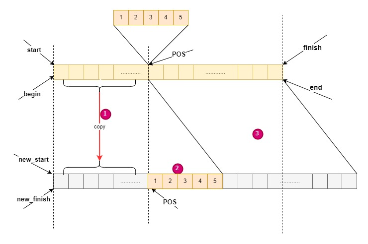

Insert function¶
template <class _Tp, class _Alloc>
void vector<_Tp, _Alloc>::_M_fill_insert(iterator __position, size_type __n,
const _Tp& __x)
{
if (__n != 0) {
if (size_type(_M_end_of_storage - _M_finish) >= __n) {
_Tp __x_copy = __x;
const size_type __elems_after = end() - __position;
iterator __old_finish(_M_finish);
if (__elems_after > __n) {
uninitialized_copy(_M_finish - __n, _M_finish, _M_finish);
_M_finish += __n;
copy_backward(__position, __old_finish - __n, __old_finish);
fill(__position, __position + __n, __x_copy);
}
else {
uninitialized_fill_n(_M_finish, __n - __elems_after, __x_copy);
_M_finish += __n - __elems_after;
uninitialized_copy(__position, __old_finish, _M_finish);
_M_finish += __elems_after;
fill(__position, __old_finish, __x_copy);
}
}
else {
const size_type __old_size = size();
const size_type __len = __old_size + max(__old_size, __n);
iterator __new_start(_M_allocate(__len));
iterator __new_finish(__new_start);
__STL_TRY {
__new_finish = uninitialized_copy(begin(), __position, __new_start);
__new_finish = uninitialized_fill_n(__new_finish, __n, __x);
__new_finish
= uninitialized_copy(__position, end(), __new_finish);
}
__STL_UNWIND((destroy(__new_start,__new_finish),
_M_deallocate(__new_start.base(),__len)));
destroy(_M_start, _M_finish);
_M_deallocate(_M_start, _M_end_of_storage - _M_start);
_M_start = __new_start.base();
_M_finish = __new_finish.base();
_M_end_of_storage = __new_start.base() + __len;
}
}
}
(_M_end_of_storage - _M_finish) >= __n¶
备用空间大于等于”新增元素个数”
1. __elems_after > __n¶
“插入点之后的现有元素个数”大于”新增元素个数”
如下图所示：
新增元素个数n: 4
插入点之后的现有元素个数elems_after:6
算法：
把从finish-n 到finish的数据move 到 finish后边
uninitialized_copy(_M_finish - __n, _M_finish, _M_finish);
将finish向后移动n
_M_finish += __n;
将剩下的2个数据copy 到old_finish位置，
copy_backward(__position, __old_finish - __n, __old_finish);
初始化数据
fill(__position, __position + __n, __x_copy);
2. __elems_after <= __n¶
“插入点之后的现有元素个数”小于等于”新增元素个数”
如下图所示：
新增元素个数n: 6
插入点之后的现有元素个数elems_after:4
算法：
首先申请2元素并初始化为x：
uninitialized_fill_n(_M_finish, __n - __elems_after, __x_copy);
finish 向后移动2个
M_finish += __n - __elems_after;
3.copy 从pos到old_finish之间的元素到finish后边
uninitialized_copy(__position, __old_finish, _M_finish);
_M_finish += __elems_after;
4.填充pos到old_finish之间的元素为x
fill(__position, __old_finish, __x_copy);
(_M_end_of_storage - _M_finish) < __n¶
备用空间小于”新增元素个数”,此时必须分配额外的空间
首先决定新长度： 旧长度的两倍或者旧长度+新增元素个数
const size_type __old_size = size();
const size_type __len = __old_size + max(__old_size, __n);
配置新的vector空间，并配置指针(new_start, new_finish)
iterator __new_start(_M_allocate(__len));
iterator __new_finish(__new_start);
将旧vector的插入点之前的元素复制到新空间中
__new_finish = uninitialized_copy(begin(), __position, __new_start);
将需要添加的元素插入到新vector的pos处
new_finish = uninitialized_fill_n(__new_finish, __n, __x);
将就vector插入点之后的元素copy到新的vector
uninitialized_copy(__position, end(), __new_finish);